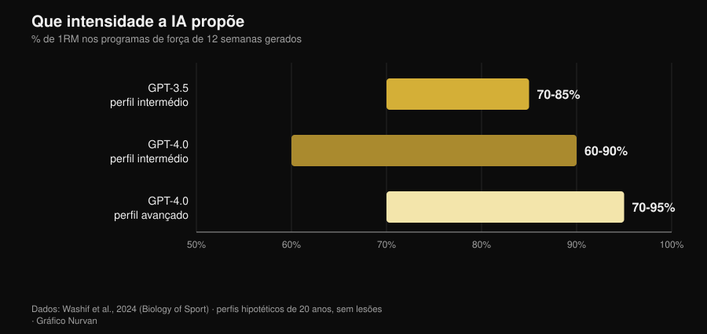
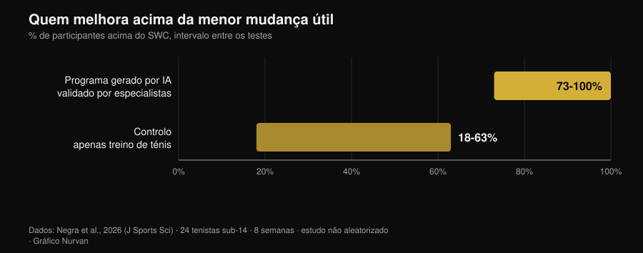

Treino gerado por IA: o que dizem os estudos
Pedes um plano a um chatbot e dez segundos depois tens doze semanas de programa, com fases, percentagens e tempos de pausa. Parece bem feito. A pergunta verdadeira não é se a IA sabe escrever um treino — sabe — mas se esse treino é de facto teu, e quanto daquilo que o faz funcionar fica fora do ficheiro. Desde 2024 alguns grupos de investigação deixaram de discutir e começaram a medir: fizeram os modelos gerar programas, entregaram-nos a especialistas com grelhas de avaliação e, num dos casos, puseram atletas a cumprir um deles durante oito semanas. Os resultados são mais interessantes do que a versão contada por quem vende apps.

Em resumo
- O plano sai sensato, mas em rascunho. Programas de 12 semanas em três fases, intensidades entre 60% e 95% de 1RM conforme o nível: estruturas coerentes com os manuais, que no entanto "provavelmente exigem um ajuste adicional antes da aplicação" (Washif et al., 2024).
- Não é personalizado: é genérico disfarçado. No mesmo trabalho, os programas gerados para um perfil masculino e para um feminino saíram objetivamente semelhantes. A IA mudou o rótulo, não o conteúdo.
- Pode funcionar, se passar por mãos humanas. Oito semanas de programa excêntrico gerado pelo ChatGPT e validado por especialistas antes do uso: sprint aos 5 m, mudança de direção e agilidade melhoraram; os saltos não (Negra et al., 2026).
- O chatbot que te mantém constante não tem provas. Revisão sistemática de 7 ensaios aleatorizados: efeitos inconsistentes na atividade física e na alimentação em adultos, nenhuma evidência em crianças. Funciona no tabaco, não no ginásio (Chen et al., 2025).
- Nas calorias é mais precisa na receita do que no plano. Planos diários e receitas gerados e depois recalculados em bases de dados nutricionais: as receitas aguentam melhor do que as ementas inteiras (Aslan e Sozlu, 2025).
- Não é perigosa, é incompleta. Doze fisioterapeutas julgaram as respostas do ChatGPT seguras e na maioria corretas em 5 domínios de 6, mas carentes de completude (Schütze et al., 2026).
O que acontece mesmo quando pedes "faz-me um treino"
Um modelo de linguagem não calcula o teu programa: prevê o texto mais plausível a partir daquilo que lhe escreveste. O resultado é uma média ponderada de tudo o que leu e, como leu muitos manuais sérios, essa média é quase sempre razoável. É por isso que os planos gerados parecem bons à primeira vista: têm as fases, os intervalos de repetições certos, o aquecimento no lugar certo.
O problema começa depois. Um programa serve para produzir uma adaptação em uma pessoa, com o seu histórico de cargas, os seus horários, as suas mazelas e a sua resposta à fadiga. Essa parte não está no prompt, nem está no texto que o modelo devolve: chega depois, semana a semana. Os estudos que seguem medem exatamente essa distância.
O que a investigação diz mesmo
| Afirmação comum | Veredicto | Fonte |
|---|---|---|
| "A IA escreve um treino sensato" | Confirmado, mas é um rascunho | Washif et al., 2024 |
| "O plano é personalizado para ti" | Desmentido | Washif et al., 2024 |
| "Um treino feito pela IA não funciona" | Desmentido, com uma condição | Negra et al., 2026 |
| "As versões novas resolveram tudo" | A precisar | Genç et al., 2025 |
| "Um chatbot mantém-te constante" | Sem suporte | Chen et al., 2025 |
| "Também lhe podes pedir a dieta" | A precisar | Aslan e Sozlu, 2025 |
| "É perigosa" | A precisar: mais incompleta do que insegura | Schütze et al., 2026 |
Afirmação 1 — "A IA escreve um treino sensato"
O primeiro trabalho indexado a entrar na matéria pediu ao GPT-3.5 e ao GPT-4.0 que desenhassem programas de força de doze semanas para perfis hipotéticos de vinte anos, primeiro com experiência intermédia e depois avançada. As duas versões produziram programas em três fases de quatro semanas com objetivos distintos (hipertrofia, força), parâmetros dentro dos intervalos dos manuais e pausas coerentes.

As diferenças entre versões existem e vão na direção esperada: o GPT-4.0 distingue o nível intermédio do avançado, alarga a janela das pausas (de 60-180 para 60-300 segundos) e gere mais informação ao mesmo tempo. A conclusão dos autores é, ainda assim, categórica: os programas "provavelmente exigem um ajuste adicional antes da aplicação" e o modelo "pode servir como ferramenta complementar para escrever um rascunho".
Rascunho é a palavra certa. Um plano plausível não é um plano adequado.
Afirmação 2 — "O plano é personalizado para ti"
É o resultado mais incómodo do mesmo estudo e quase ninguém o cita. Aos autores bastou mudar o sexo do perfil no prompt para ver o que acontecia: todos os programas gerados saíram objetivamente semelhantes independentemente do sexo. Não é uma crítica à fisiologia — as recomendações de treino para homens e mulheres sobrepõem-se bastante —, é uma crítica ao mecanismo: o modelo não usou a única informação individual que lhe foi dada.
Se um dado explícito no prompt não muda o resultado, aquilo que não escreveste no prompt pesa zero. E aquilo que não escreves é quase tudo: quanto dormiste, quanto te custou o treino de ontem, porque é que o ombro direito só puxa no supino com pega larga.
Afirmação 3 — "Um treino feito pela IA não funciona"
Em 2026 chegou o primeiro estudo de intervenção. Vinte e quatro tenistas sub-14 divididos em dois grupos: um seguiu durante oito semanas um programa de trabalho excêntrico gerado pelo ChatGPT, o outro continuou apenas com o treino de ténis. O grupo IA melhorou de forma significativa no sprint de 5 metros, na mudança de direção (505) e na agilidade, com magnitudes de efeito entre 0,6 e 2,15 contra 0,15-0,6 do controlo. No sprint de 10 metros e nos saltos, nenhuma diferença entre grupos.

A condição está numa linha dos métodos: o programa gerado pela IA foi validado por especialistas humanos antes de ser aplicado. Não é "a IA treinou um grupo de jovens": é "especialistas usaram a IA para escrever a primeira versão, controlaram-na e só depois a puseram em prática". É exatamente este o fluxo de trabalho que funciona, e é também a razão pela qual o estudo não demonstra que podes saltar o controlo.
Afirmação 4 — "As versões novas resolveram tudo"
Um grupo de investigação colocou três versões do ChatGPT a gerar programas de força de doze semanas a partir de sete conjuntos de instruções diferentes e mandou avaliá-los por sete especialistas — treinadores certificados CSCS e doutorados em ciências do desporto com pelo menos dez anos de experiência — segundo uma grelha que pesava, entre outras coisas, a individualização da progressão, as modificações do programa, o risco de lesão e a presença de recomendações erradas.
As diferenças entre versões foram estatisticamente significativas em todas as comparações aos pares (p = 0,018), com a versão mais recente julgada mais detalhada, mais coerente e melhor ancorada na literatura. A melhoria é real. A conclusão dos autores, no entanto, é idêntica à de 2024: para que um plano assistido por IA seja seguro, baseado na evidência e individualizado, "o envolvimento de competência humana qualificada continua a ser essencial". As versões melhoram o rascunho, não substituem a revisão.
Afirmação 5 — "Um chatbot mantém-te mais constante do que um treinador"
Aqui a promessa comercial está bem à frente dos dados. Uma revisão sistemática percorreu doze bases de dados e 6.301 registos para isolar os estudos aleatorizados sobre chatbots capazes de manter uma conversa aberta em linguagem natural: sobraram sete. No tabaco os efeitos são consistentes. Na alimentação e na atividade física em adultos são inconsistentes, nas crianças não há evidência de efeito, e dois dos quatro estudos sobre atividade física têm risco elevado de viés.
Há um detalhe que explica muito: os utilizadores interagiam bastante com os chatbots em geral, mas muito menos nos comportamentos de saúde específicos. A satisfação é alta, a mudança não. É a diferença entre uma app de que gostas e uma app que te faz treinar, e é a mesma diferença que separa um treinador simpático de um treinador que consegue resultados: sobre isso reuni os números da supervisão humana no artigo sobre se o coaching online funciona mesmo.
Afirmação 6 — "Afinal também lhe podes pedir a dieta"
Um estudo piloto pediu ao ChatGPT planos alimentares de 1500, 2000 e 2500 kcal e receitas de 300, 500 e 700 kcal, e depois recalculou tudo em bases de dados nutricionais. O modelo mostrou-se mais preciso a construir uma receita com as calorias pedidas do que a compor um plano diário inteiro: quanto mais pequeno e circunscrito é o objeto, menos o erro se acumula.
É um piloto sobre uma versão já antiga, pelo que vale como indicação de método e não como veredicto. A indicação é, de qualquer forma, útil: usa a IA para as peças, não para a estrutura. E quando são precisos os gramas verdadeiros, são precisos os gramas verdadeiros de uma base de dados alimentar, não uma estimativa plausível.
Afirmação 7 — "É perigosa"
O teste mais severo vem de fora do ginásio. Doze fisioterapeutas experientes avaliaram as respostas do ChatGPT a seis perguntas sobre exercício numa doença muscular rara, numa escala que ia de "completa e correta" a "errada e insegura". Veredicto: respostas seguras e na maioria corretas em cinco domínios de seis, mas muitas vezes não completas.
É o perfil de risco típico: não te diz para fazer algo absurdo, diz-te algo razoável deixando de fora a parte que importava. Na medicina do desporto a conclusão é a mesma: o desempenho de um modelo nos seus próprios testes não se traduz automaticamente em melhores resultados, e o profissional permanece no circuito como quem integra a informação (Palermi et al., 2026). Um sintoma que não passa, uma dor que piora, um exame para interpretar: isso é para o médico, não para o chatbot.
Como usá-la bem
- Usa-a para o rascunho, não para a decisão. Plano de partida, ideias de variantes, reorganizar um programa que já tens: sim. Escolher a carga de amanhã: não.
- Dá-lhe o contexto que tens de facto. Histórico de cargas, RIR dos últimos treinos, dias disponíveis, lesões. Sem isso, como mostrou Washif, o resultado não muda nem quando muda o perfil.
- Exige contas dos números. Se cita um estudo, verifica-o: as referências inventadas são a forma mais rápida de levares uma convicção falsa para o ginásio.
- Fá-la passar por quem a sabe ler. No único estudo de intervenção positivo, o programa tinha sido validado por especialistas humanos antes do uso. É a diferença entre uma ferramenta e um substituto.
- Mede, não confies. Ao fim de quatro semanas olha para as cargas, não para as sensações: se o rascunho não está a produzir progressão, é um rascunho errado.
- Mantém-na fora da medicina. Patologias, medicamentos, exames: nenhum chatbot, nenhuma app. Médico.
Experimenta a Nurvan — a IA escreve o rascunho, os teus dados corrigem-no
Na Nurvan o plano não fica um bloco de texto: cargas, repetições e RIR de cada série entram no histórico, as séries de aquecimento são propostas a partir da carga de trabalho do dia e a progressão constrói-se sobre aquilo que levantaste de facto. Se trabalhas com um treinador, ele vê os mesmos números e corrige onde é preciso — que é exatamente a parte que falta a um plano gerado.
Perguntas frequentes
Posso usar o ChatGPT para fazer o meu plano de ginásio?
Como rascunho sim, como programa definitivo não. Os estudos que avaliaram os programas gerados descrevem-nos como estruturalmente coerentes mas a necessitar de ajuste, e concordam num ponto: é precisa competência humana qualificada para os tornar seguros e individualizados (Washif et al., 2024; Genç et al., 2025).
Os treinos gerados por IA são diferentes para homens e mulheres?
No estudo que o verificou, não: os programas produzidos para perfis masculinos e femininos eram objetivamente semelhantes (Washif et al., 2024). Se esperas personalização só porque escreveste quem és, provavelmente não a estás a obter.
Uma app com IA ajuda-me a ser constante?
Ainda não há evidência sólida. Nos sete estudos aleatorizados disponíveis, os efeitos dos chatbots na atividade física e na alimentação em adultos são inconsistentes, e o resultado só é consistente no tabaco (Chen et al., 2025).
IA ou treinador?
Não são alternativas no mesmo plano: uma escreve texto, o outro observa-te. Os dados sobre supervisão e intensidade mostram que a parte decisiva do trabalho humano é fazer executar bem um plano, não escrevê-lo — por exemplo, com um técnico por cada cinco pessoas o supino máximo subiu 15,9% contra 10,2% com um técnico por cada vinte e cinco (Gentil e Bottaro, 2010).
Lê também
- O coaching online funciona? O que dizem os estudos — quanto conta mesmo ser acompanhado, com números.
- Quantas repetições para massa muscular? O mito das 8-12 — as variáveis de programação que um rascunho de IA recebe, e o que a evidência diz sobre elas.
- Tendências fitness 2027: o que funciona mesmo — onde se coloca a tecnologia entre as modas e as coisas que aguentam.
Fontes
Referências bibliográficas obtidas através da PubMed. Tema escolhido com a pesquisa de tendência de 2 de novembro de 2026: a pergunta "IA ou treinador" é das mais procuradas do momento no fitness, mas as páginas que ocupam esses resultados são blogues de software sem uma única fonte.
- Washif JA, Pagaduan J, James C, Dergaa I, Beaven CM, 2024. Artificial intelligence in sport: Exploring the potential of using ChatGPT in resistance training prescription. Biology of Sport 41(2):209-220. PMID 38524820. DOI
- Genç A, Aydın GR, Kasap M, Özkan A, Rakhymzhanov A, Gürcan HH, Güllü S, Demirhan B, 2025. Comparative evaluation of ChatGPT versions in training program design: scientific approach, accuracy, and practical applicability. BMC Sports Science, Medicine and Rehabilitation 18(1):19. PMID 41345701. DOI
- Negra Y, Sammoud S, Bouguezzi R, Markov A, Capranica L, Müller P, Chaabene H, 2026. Effects of a ChatGPT-generated eccentric training programme on speed, change of direction, agility, and jumping performance in U14 tennis players: A non-randomised controlled study. Journal of Sports Sciences. PMID 41944488. DOI
- Chen J, Hu RZ, Zhuang YX, Zhang JQ, Shan R, Yang Y, Liu Z, 2025. Natural Language Processing Chatbot-Based Interventions for Improvement of Diet, Physical Activity, and Tobacco Smoking Behaviors: Systematic Review. JMIR mHealth and uHealth 13:e66403. PMID 40503914. DOI
- Aslan S, Sozlu S, 2025. A pilot study of the potential role of ChatGPT in stated-calorie diet planning. International Journal of Obesity 49(9):1891-1896. PMID 40628963. DOI
- Schütze K, Shehatha R, Beer K, Needham M, Smith T, Bagg M, Doverty A, Cooper I, 2026. Evaluating ChatGPT's advice and recommendations regarding exercise for people with inclusion body myositis. Neuromuscular Disorders 62:106418. PMID 41950577. DOI
- Palermi S, Pucciatti R, Regnard NE, et al., 2026. Artificial Intelligence in Sports Medicine: A Decision-Centered Framework for the Future Sports Physician. Diagnostics 16(10):1448. PMID 42196815. DOI
- Gentil P, Bottaro M, 2010. Influence of supervision ratio on muscle adaptations to resistance training in nontrained subjects. Journal of Strength and Conditioning Research 24(3):639-43. PMID 19661830. DOI
Giammaria Loi é o fundador da Nurvan. Treina com pesos desde 2012, trabalha como personal trainer e coach certificado FIPE desde 2013 e compete em powerlifting a nível nacional desde 2018. Cada artigo que assina parte dos estudos científicos e chega ao que funciona mesmo no ginásio.
Nota: conteúdo informativo, não substitui a opinião de um médico ou de um profissional.